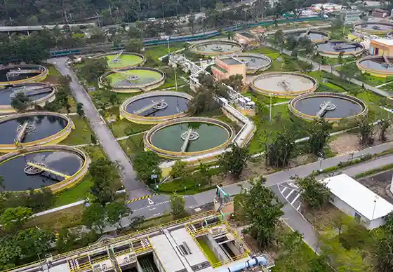
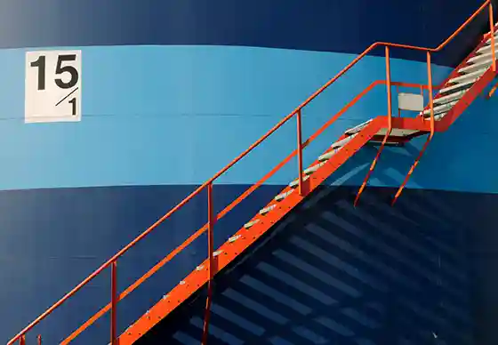
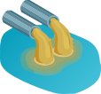
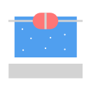
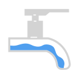

污水及废水处理
随着环保意识的不断提高，安全、无消毒副产物（DBPs）的紫外线消毒技术正逐步替代传统氯消毒方式。目前，韩国超过70%的污水处理设施采用紫外线消毒系统，广泛应用于小型无人值守污水处理站、大型污水处理厂及再生水回用等领域，凭借其安全、经济、高效等优势，已成为广受认可的消毒技术。

饮用水消毒
传统消毒方式在去除饮用水中的病原微生物方面存在消毒效果有限、运行成本高、环境污染及异味等问题。紫外线消毒技术可有效灭活对氯消毒具有较强耐受性的隐孢子虫（Cryptosporidium）和贾第鞭毛虫（Giardia）等病原微生物，且不产生消毒副产物及异味。同时，紫外线消毒受水温、pH等因素影响较小，具有运行简便、性能稳定、可减少含氯消毒剂用量等优势，目前已广泛应用于全球日处理能力达数十万吨的大型自来水厂。

游泳池、温泉、 桑那浴
游泳池或温泉，大众洗浴中心等设施为了持续消毒，维持一定程度的氯浓度。注入氯后消毒效果虽然高，但是因为消毒副产物形成氯胺等化合物，会对用户带来恶臭的不快、引发皮肤及眼球刺激等，同时导致设施物衰老。
紫外线就是可以减少这种副作用的对策，没有任何恶臭，对病原菌具有非常高的消毒能力，通过适用紫外线可以大量减少氯的使用量，减少氯注入量的同时还可以减少恶臭的发生，帮助提高游泳池等设施用户的满意度。
紫外线就是可以减少这种副作用的对策，没有任何恶臭，对病原菌具有非常高的消毒能力，通过适用紫外线可以大量减少氯的使用量，减少氯注入量的同时还可以减少恶臭的发生，帮助提高游泳池等设施用户的满意度。

动物园、水族馆、养殖场
与人接近的家畜、动物等饲养设施一直都有排泄物、分泌物、食物垃圾等引发的感染或恶臭问题。
而且，为水中生物栖息而准备的设施因为有利用吸收这种养分大量繁殖的藻类等，引发恶臭或产生危害水中生物生存的毒素、降低氧气浓度等，发生病原菌时，急速传染，具有较高的致死率及繁殖降低、降低发育等问题，因此积极使用不影响水中生态、不发生毒性物质后患的紫外线。
而且，为水中生物栖息而准备的设施因为有利用吸收这种养分大量繁殖的藻类等，引发恶臭或产生危害水中生物生存的毒素、降低氧气浓度等，发生病原菌时，急速传染，具有较高的致死率及繁殖降低、降低发育等问题，因此积极使用不影响水中生态、不发生毒性物质后患的紫外线。

利用紫外线的环境污染物质处理
随着人类文明发达的加速，自然环境的污染形成大量污染物的累积，人类依赖于生存的大气、水质、土壤等的污染，人类已经充分认识到状态的严重。而紫外线本身就有可以分解、氧化这种污染物质的能力，利用添加过氧化氢等的时候发生的强力氧化物质可以去除引发癌症的N-Nitrosodimethylamine/NDMA和各种有机物质、恶臭等，这种高度氧化处理工艺领域的技术在不断的进步发展
紫外线高级氧化技术也可用于工业废水处理，有效去除其中的污染物。
紫外线高级氧化技术也可用于工业废水处理，有效去除其中的污染物。
水处理工艺中的紫外线（UV）技术
从饮用水净化、污水处理到再生水回用及地下水修复，紫外线（UV）技术广泛应用于整个水循环的各个环节。
地表水净化处理工艺

地表水源

取水场
UV 选择

絮凝沉淀
UV 选择

过滤
UV 选择

杀菌

供水
地表水净化处理工艺
污水及废水流入

一级处理
UV 选择

二次处理
过滤
UV 选择
排放
地表水净化处理工艺
受污染的地下水
UV 选择
气液分离
活性炭
UV 选择
修复水供水或排放